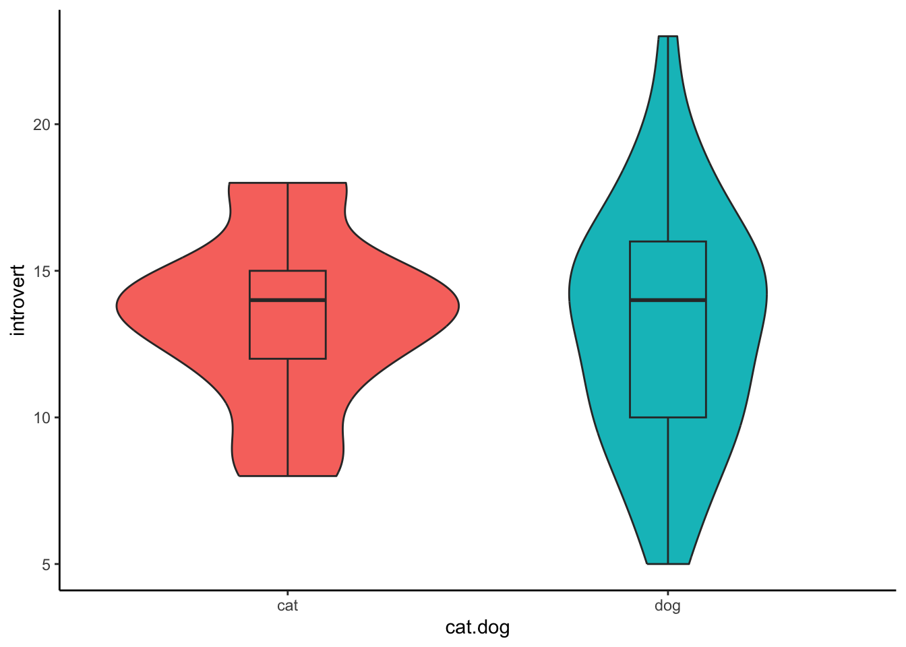
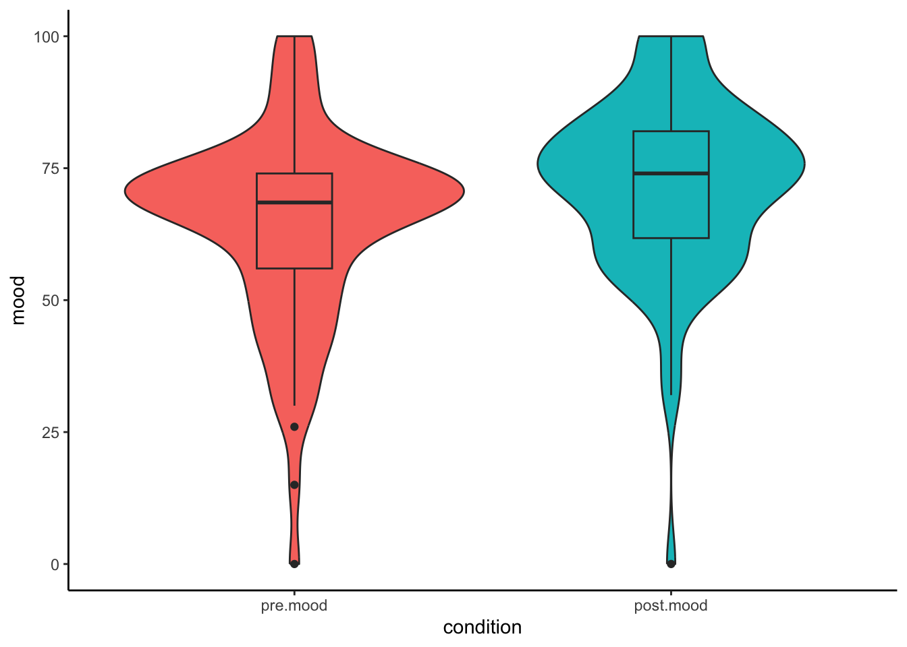
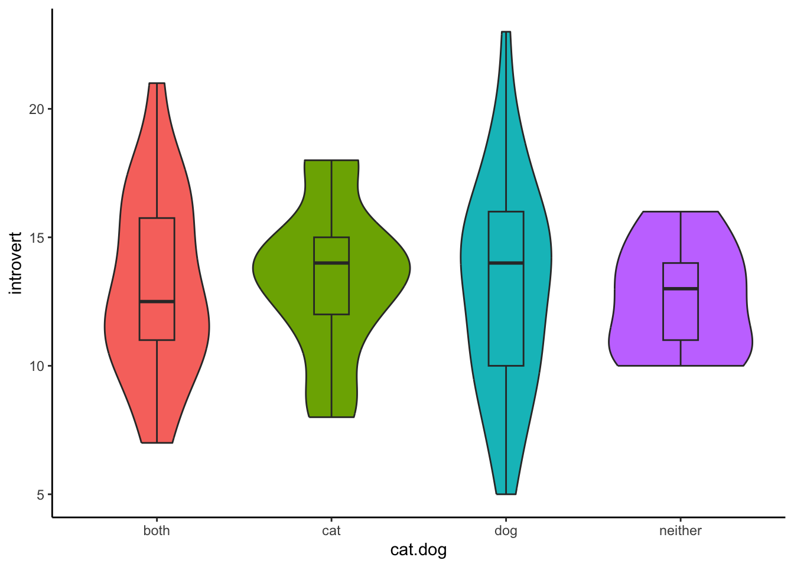

This page contains extra R content not covered in the demonstrations and could be considered supplementary to the module. This content is useful for completing the advanced exercises from Week 5 and focuses on conducting non-parametric tests in R. As covered in the lecture series, non-parametric tests are distribution-free tests. They are useful if your data does not meet the assumptions of the parametric test.
The Mann-Whitney U Test is a non-parametric test for when you have a
categorical IV (with two levels) and a continuous DV. The equivalent
parametric test is an independent-samples t-test. The function that runs
a Mann-Whitney U Test is the wilcox.test() function. It’s a
bit confusing that the Mann-Whitney U Test uses a function with a
different name, but the reason for this is because the Mann-Whitney U
Test is also called the Wilcoxon Rank Sum Test (though I avoid using
this name as it is easily confused with the Wilcoxon Signed Rank
Test).
If we wanted to assess whether cat-people are more introverted than dog-people in the class dataset using a Mann-Whitney U Test, the code would look like this:
This code is identical to that when we prepared the data for an independent-samples t-test.
data1.clean <- data %>%
filter(cat.dog != "both") %>%
filter(cat.dog != "neither") %>%
filter(cat.dog != "") %>%
mutate( introvert = introversion2 + introversion5 + introversion7 + introversion8 + introversion10) %>%
select(cat.dog,introvert)To conduct a Mann-Whitney U Test, you need to specify the two things needed for all analysis functions: the formula, and the data.frame.
wilcox.test(introvert~cat.dog,data = data1.clean)##
## Wilcoxon rank sum test with continuity correction
##
## data: introvert by cat.dog
## W = 137, p-value = 0.04366
## alternative hypothesis: true location shift is not equal to 0A boxplot is the perfect visualisation for non-parametric tests, as it visualises the median and the interquartile range. We can combine the boxplot geom and with the violin geom to also give a visualisation of the distribution of the data.
ggplot(data1.clean,aes(x = cat.dog,y = introvert,fill = cat.dog)) +
geom_violin() +
geom_boxplot(width = .2) +
theme_classic() +
theme(legend.position = "none")
To report a Mann-Whitney U test, you will need to include the following information:
The U-statistic is the ‘W’ from the output of the
wilcox.test() function. This function also gives you the
p-value. To get the medians, you can use the summarise()
and median() functions:
data1.summary <- data1.clean %>%
group_by(cat.dog) %>%
summarise(introvert_median = median(introvert,na.rm = TRUE))
data1.summary## # A tibble: 2 × 2
## cat.dog introvert_median
## <chr> <dbl>
## 1 cat 15
## 2 dog 12Therefore, the write-up becomes:
A Mann-Whitney U test indicated that there was a significant differences in introversion between cat-people (Mdn = 15) and dog-people (Mdn = 12), U = 137, p = 0.044.
The Wilcoxon Signed Rank Test is a non-parametric test for when you have a within-subjects categorical IV (with two levels) and a continuous DV. The equivalent parametric test is an paired-samples t-test.
Let’s re-evaluate the analysis investigating intended alcohol consumption before and after exposure to the Scottish government’s drinking guidelines in the class dataset, but this time use the non-parametric test.
Again, this code is identical for when we prepared the data for the paired-samples t-test.
data2.clean <- data %>%
filter(!is.na(pre.drink)) %>%
filter(!is.na(post.drink)) %>%
select(student.no,pre.drink,post.drink) %>%
gather(key = "condition",value = "alcohol",pre.drink,post.drink) %>%
mutate(condition = factor(condition,levels = c("pre.drink","post.drink")))Similar to how an independent-samples t-test and a paired-samples
t-test use the same function, the Mann-Whitney U Test and the Wilcoxon
Signed Rank Test also use the same function: wilcox.test().
The difference here is the paired argument must be set to
TRUE - the same as if you were conducting a paired-samples
t-test with the t.test() function.
Therefore, the code becomes:
wilcox.test(alcohol ~ condition,data2.clean,paired = TRUE)##
## Wilcoxon signed rank test with continuity correction
##
## data: alcohol by condition
## V = 43, p-value = 0.1157
## alternative hypothesis: true location shift is not equal to 0Again, we can use a boxplot and violin plot to visualise the difference before and after exposure:
ggplot(data2.clean,aes(x = condition,y = alcohol,fill = condition)) +
geom_violin() +
geom_boxplot(width = .2) +
theme_classic() +
theme(legend.position = "none")
Similar to the Mann-Whitney U test, we require information of the median for each condition. This code is exactly the same as above:
data2.summary <- data2.clean %>%
group_by(condition) %>%
summarise(introvert_median = median(alcohol,na.rm = TRUE))
data2.summary## # A tibble: 2 × 2
## condition introvert_median
## <fct> <dbl>
## 1 pre.drink 4
## 2 post.drink 4We also need the test statistic (W) and the associated p-value. Once we have all this information, the final write-up looks like this:
A Wilcoxon signed rank test indicated that there was a non-significant difference on intended alcohol consumption before (Mdn = 4) and after (Mdn = 4) exposure to the Scottish government’s drinking guidelines, W = 43, p = 0.116.
The Kruskal-Wallis test is a non-parametric alternative to the one-way ANOVA, meaning it is used when you have a categorical IV with more than 2 groups, and a continuous DV.
As before, we will demonstrate the Kruskal-Wallis test using the class dataset by revisiting the question of whether cat-people, dog-people, those who like both, and those who like neither differ on introversion. First, we must prepare the data - this code is identical to that for the one-way ANOVA.
data3.clean <- data %>%
# filter(cat.dog != "both") %>%
# filter(cat.dog != "neither") %>%
filter(cat.dog != "") %>%
mutate(introvert = introversion2 + introversion5 + introversion7 + introversion8 + introversion10) %>%
select(cat.dog,introvert)The function to conduct the Kruskal-Wallis test is
kruskal.test(). Again, with all statistical test functions,
you need to supply the formula and the data.frame you wish to
analyse.
kruskal.test(introvert ~ cat.dog,data = data3.clean)Here we can visualise the data using a boxplot and violin plot.
ggplot(data3.clean,aes(x = cat.dog,y = introvert,fill = cat.dog)) +
geom_violin() +
geom_boxplot(width = .2) +
theme_classic() +
theme(legend.position = "none")
To report a Kruskal-Wallis test, you need the following bits of information:
The first two points are included in the output of the
kruskal.test() function, and we can use the
summarise() and median() functions to get the
third point:
data3.summary <- data3.clean %>%
group_by(cat.dog) %>%
summarise(introvert_median = median(introvert,na.rm = TRUE))
data3.summary## # A tibble: 4 × 2
## cat.dog introvert_median
## <chr> <dbl>
## 1 both 13
## 2 cat 15
## 3 dog 12
## 4 neither 13With this information, you can write-up your results. Remember, much like with the one-way ANOVA, this Kruskal-Wallis test will tell you whether the groups are significantly different, but it does not tell you where those differences are. In order to determine this, you will need to conduct post-hoc comparisons.
A Kruskal-Wallis test indicated that there was a non-significant differences in introversion between cat-people (Mdn = 16), dog-people (Mdn = 15), those who like both (Mdn = 12), and those who like neither (Mdn =7.5), Chi-square(3) = 6.07, p = 0.108.
If you would like to practice the skills on this page, weekly exercise questions on this content are available in the advanced exercises for Week 5. You can download the interactive exercises by clicking the link below.